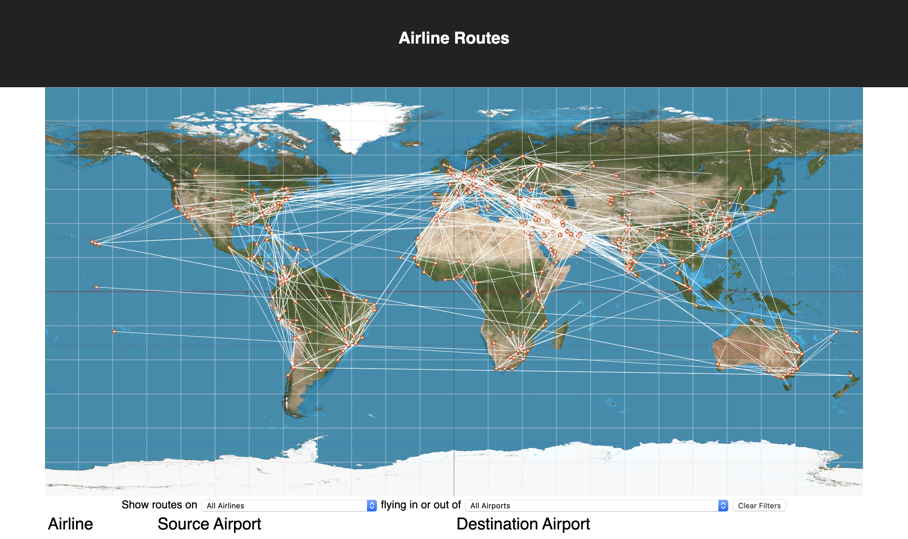
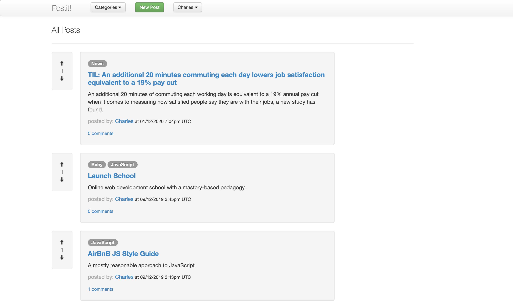

Charles Ging
I'm a full stack software engineer in Denver, Colorado with experience in Node/JavaScript, Ruby/Rails, Docker, React.js, and PostgreSQL.
I recently built RedPoint, a web-native computational notebook for programmers.
RedPoint is an open source, web-native notebook optimized for sharing and presenting code, with support for multiple languages, webhooks and APIs.
Read our case study to learn about the engineering behind Redpoint, including how we strengthened security with container isolation and a secure runtime, buffered incoming webhook data with a Redis queue, and wrote a reverse proxy server from scratch with Node.js to forward HTTP and WebSocket traffic.
Read the RedPoint case studyCheck out the presentation I gave for the DenverScript meetup group. In this talk, I describe the technical details and decisions made when building RedPoint.
Other projects
-

Airline Routes
A React.js application allowing filtration of international flights by airport and airline. Filters can be set using dropdown select menus, or by using the clickable SVG map.
-

Postit
A reddit-like app built with Ruby/Rails backed by a PostgreSQL database. Users can create posts and comments and vote on them.
-

Trellioh
A responsive project management tool based on Trello built with React/Redux and a Rails backend supported by PostgreSQL.